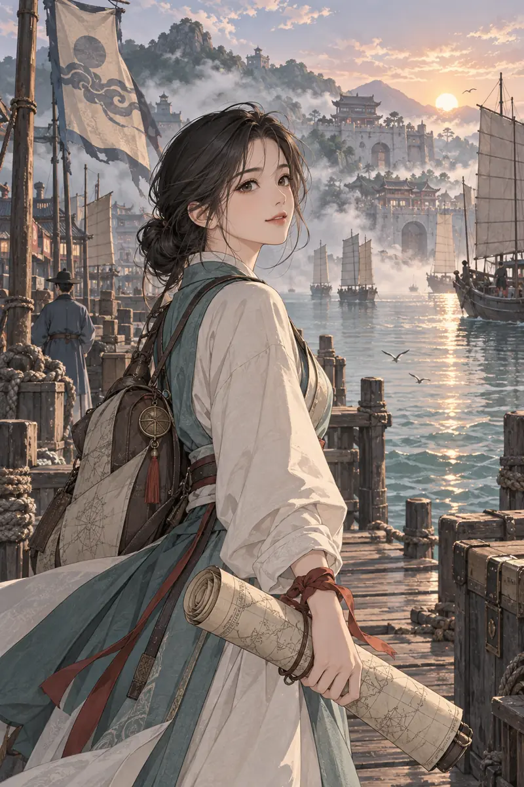
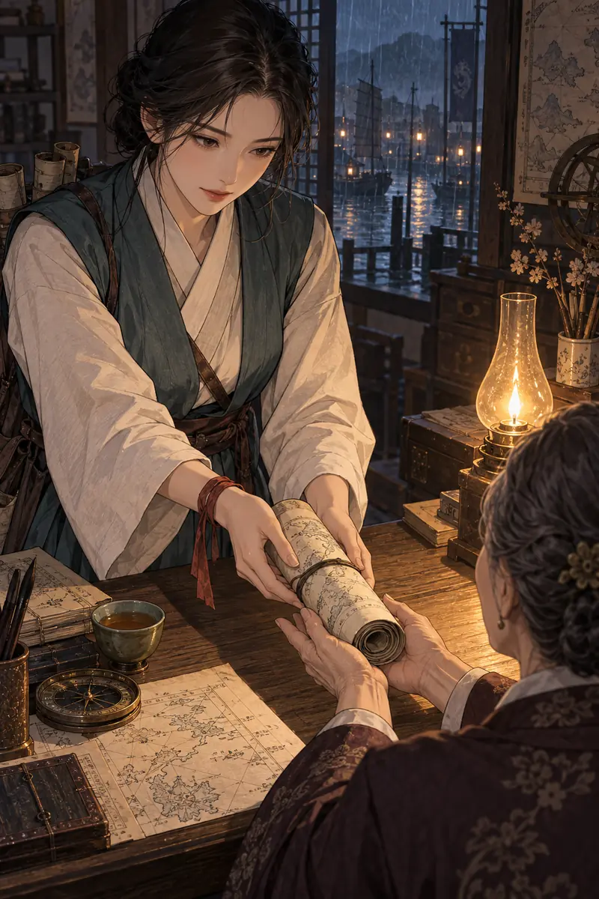
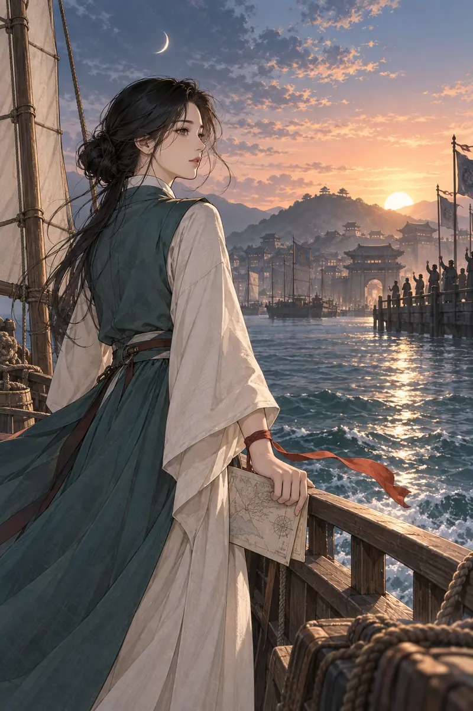

결정하기 전에 한 번 더 보는 마음
망설임처럼 느껴졌던 시간이, 당신만의 지도를 그리는 과정일 수도 있어요.
얼굴의 형태를 단서로 펼쳐 보는 상징적인 전생 이야기.
지금 보고 있는 인물과 관상 단서는 디자인 검토용 예시입니다.

EP.01
먼저 눈에 들어온 것은 눈매였습니다.
한 번 더 살피고 나서야, 입을 여는 얼굴.
그 인상을 따라가자 안개 낀 항구가 열렸습니다. 밧줄이 젖은 나무를 긁고, 이른 장사꾼들의 목소리가 물 위를 건너왔죠.
당신은 남의 목적지를 그리는 사람이었습니다. 찻물이 식기 전에 붓을 세 번 씻고, 길의 끝에는 늘 작은 점을 찍었습니다.
“이곳 다음에는
무엇이 있을까요?”
지도를 사는 사람들에게는 대답했습니다.
자신에게는, 아직 답하지 못한 질문이었죠.
EP.02
비가 내리던 저녁, 늘 차를 가져다주던 이웃이 찾아왔습니다. 물길이 바뀌어 돌아오지 못한 가족을 찾고 있었죠.
탁자 위에는 며칠을 고쳐 그린 새 항로가 있었습니다. 내일이면 좋은 값을 받을 지도였습니다.

“값은 돌아와서 이야기해요.”
그 말로, 내일의 계획이 바뀌었습니다.
당신은 원본을 건네고 작은 사본 한 장을 품에 넣었습니다.
EP.03
며칠 뒤, 두 사람이 함께 문을 두드렸습니다. 젖은 신발 두 켤레가 나란히 놓였죠.
이웃은 지도 값을 물었습니다.
당신은 오래 접어 둔 사본을 펼쳤습니다.
“다음 배에,
자리 하나만 알아봐 주세요.”
누군가를 돌아오게 한 길이,
이번에는 당신을 밖으로 데리고 나갔습니다.

밧줄이 풀리자 손목의 붉은 끈도 바람을 탔습니다.
처음으로, 지도가 없는 곳을 바라봤습니다.
두려움이 사라진 건 아니었습니다.
그래도 이번에는 배에서 내리지 않았죠.
전생 관상의 상징적 해석으로는,
이 이야기는 이런 마음과 닿아 있습니다.
망설임처럼 느껴졌던 시간이, 당신만의 지도를 그리는 과정일 수도 있어요.
도움을 주고도 내 몫을 잊지 않는 연습. 다정함과 경계는 함께 지닐 수 있습니다.
멀리 떠나지 않아도 괜찮습니다. 이번 주에는 늘 걷던 길에서 한 번만 벗어나 보세요.
그 사람의 이야기는 여기서 끝납니다.
다음 길을 고르는 건,
지금의 당신입니다.
얼굴에 남아 있던 나의 전생은?
실제 결과에 있던 주령·곁령·그림자령, 부적, 상세 관상 근거를 이곳에서 이어 볼 수 있도록 연결할 예정입니다. 기존 결과를 없애지 않고 짧은 웹툰 본문 뒤로 옮기는 구성입니다.
전생 관상은 관상학의 상징을 빌린 오락과 자기성찰용 이야기입니다. 목업의 인물·관상 단서·배경은 창작 예시이며 개인 분석 결과가 아닙니다.
이 아래는 서비스 본문에 포함하지 않는 목업 검토 자료입니다. 640px 단일 읽기 열, 모바일 360·390·430px에서 이미지와 짧은 문단을 번갈아 배치합니다.
| 토큰 | 값 | 역할 |
|---|---|---|
| --plf-paper | #fffaf7 | 본문 종이 |
| --plf-ink | #3c1830 | 본문 글씨 |
| --plf-muted | #70445c | 설명·관상 단서 |
| --plf-rose | #b31955 | 에피소드·CTA |
| --plf-night / light | #24081a / #fff1f7 | 마지막 기억·공유 카드 |
로딩: “사진에서 얼굴의 형태를 살피고 있어요.” → “찾은 단서로 이야기를 엮고 있어요.” 실제 사진 처리/계산 단계로 연결하며 가짜 진행률은 쓰지 않습니다.
오류: “얼굴을 찾지 못했어요. 정면을 바라본 밝은 사진으로 다시 시도해 주세요.” 이미지 실패 시 자리 크기와 장면 설명은 유지합니다.
캐리오버: 예시 인물은 실제 사용자를 닮게 생성한 것이 아닙니다. 다양한 역할/시대에 이 세 이미지를 무작정 돌려 쓰지 않습니다. 공유 이미지 로드 대기·카카오 링크·기존 결제 복귀·초점 복원은 서비스 연결 때 별도 회귀 검증합니다.